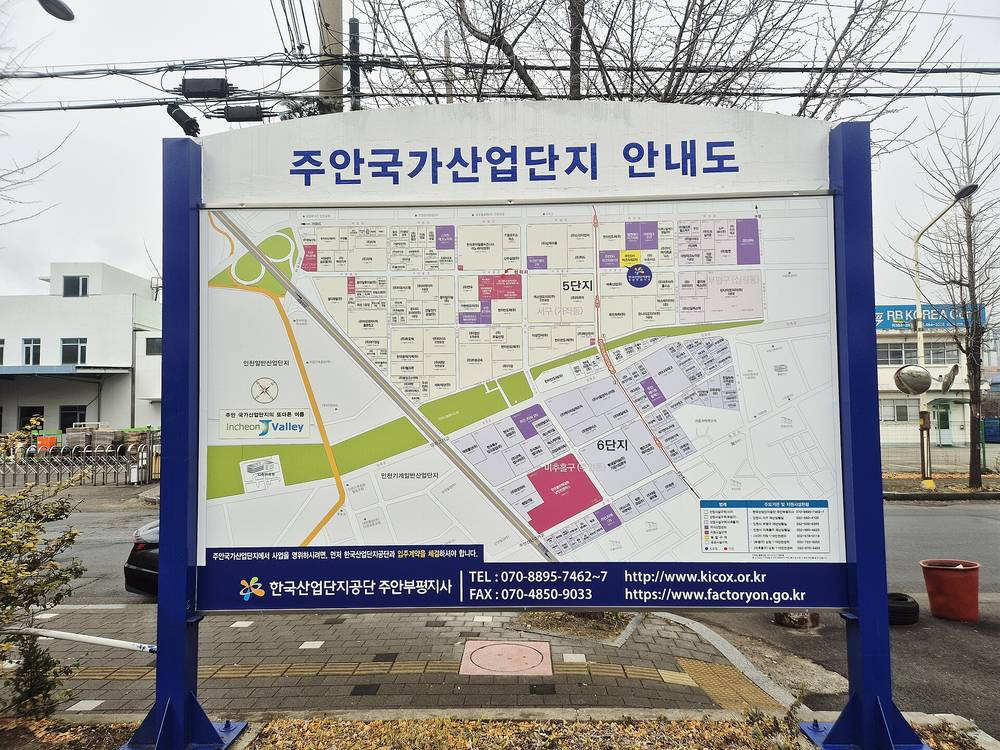

인천 기후단체 "초광역특구법은 기업에 재생에너지 몰아주기"…온실가스 감축 책임·주민 결정권 빠졌다며 철회 요구

집적화지구 전기를 특구기업에 우선 공급·신규 발전사업자 진입 제한 지적…"주민은 공청회 의견 청취뿐"
인천 지역 기후단체가 정부·여당이 추진하는 초광역권 전략산업특구법(초광역특구법)이 전력 다소비 기업에 재생에너지를 몰아주면서 온실가스 감축 책임과 주민 결정권은 비워 뒀다며 법안 철회를 요구했다. 기후위기 인천비상행동은 15일 성명에서 반도체·인공지능 데이터센터처럼 전기를 많이 쓰는 산업을 키우면서도 특구 기업의 감축 목표나 전력 수요 절감 의무가 법안에 없다고 지적했다. 단체는 또 재생에너지집적화지구에서 생산한 전기를 특구 기업과 입주 기업에 먼저 공급하고 새 발전사업자의 진입을 막는 구조여서, 주민 발전사업 참여·금융지원 조항이 있어도 실제 운영과 전력 공급에 대한 결정권은 주민에게 없다고 비판했다. 일정 규모 이상을 투자하려는 기업이 특구계획을 제안하면 지자체가 특별한 사유 없이는 받아들여야 하는 반면 주민에게는 공청회 같은 의견 청취 절차만 주어진다는 점도 문제로 꼽았다. 단체는 산업은 특구에서 크고 발전소·송전선로 부담은 다른 지역이 떠안을 수 있다며, 화석연료 감축과 재생에너지의 공공성, 주민 권리를 보장하는 산업정책이 필요하다고 밝혔다.
시민에너지 관점
재생에너지를 산업 유치의 도구로만 쓰면 발전소 주변 주민은 땅과 경관을 내주고 전기와 수익은 특구 기업이 가져가는 구조가 된다. 덴마크와 독일은 대형 재생에너지 사업에 주민 지분 참여와 이익공유를 의무로 붙여 수용성과 속도를 함께 얻었다. 기업 유치가 늦어진다는 걱정이 있겠지만, 주민이 지분을 가진 발전소일수록 반대 소송과 지연이 줄어든다는 것이 해외 경험이다. 국회는 특구법 심사에서 집적화지구 발전사업의 일정 비율을 주민·협동조합 소유로 정하고, 주민 동의 절차를 의견 청취가 아닌 결정 절차로 바꿔야 한다.
출처: 중부일보 2026-11-15 김유리 원문 보기
仁川の気候団体「超広域特区法は企業への再エネ集中」…温室効果ガス削減責任・住民の決定権が抜けていると撤回要求
集積化地区の電気を特区企業に優先供給・新規発電事業者の参入制限を指摘…「住民は公聴会で意見を聞かれるだけ」
仁川の気候団体が、政府・与党が進める超広域圏戦略産業特区法（超広域特区法）は電力多消費企業に再生可能エネルギーを集中させる一方、温室効果ガス削減の責任と住民の決定権を空白にしているとして、法案の撤回を求めた。気候危機仁川非常行動は15日の声明で、半導体や人工知能（AI）データセンターのように電気を大量に使う産業を育てながら、特区企業の削減目標や電力需要の節減義務が法案にないと指摘した。団体はまた、再生エネルギー集積化地区で生産した電気を特区企業と入居企業に優先供給し、新たな発電事業者の参入を制限する構造のため、住民の発電事業参加や金融支援の条項があっても、実際の運営と電力供給に関する決定権は住民にないと批判した。一定規模以上を投資しようとする企業が特区計画を提案すれば自治体は特別な理由がない限り受け入れなければならないのに対し、住民には公聴会のような意見聴取の手続きしか与えられていない点も問題に挙げた。団体は、産業は特区で育ち、発電所や送電線の負担は他の地域が背負いかねないとして、化石燃料の削減と再エネの公共性、住民の権利を保障する産業政策が必要だと訴えた。
市民エネルギーの視点
再エネを産業誘致の道具としてだけ使えば、発電所周辺の住民は土地と景観を差し出し、電気と収益は特区企業が持っていく構造になる。デンマークとドイツは大型再エネ事業に住民の持分参加と利益共有を義務として付け、受容性とスピードを同時に得た。企業誘致が遅れるという懸念もあろうが、住民が持分を持つ発電所ほど反対訴訟や遅延が減るというのが海外の経験だ。国会は特区法の審査で、集積化地区の発電事業の一定割合を住民・協同組合の所有と定め、住民同意の手続きを意見聴取ではなく決定の手続きに変えるべきだ。
出典: 중부일보 2026-11-15 김유리 原文を読む
仁川气候团体：“超广域特区法是把可再生能源集中给企业”…以缺少温室气体减排责任和居民决定权为由要求撤回
指出集聚区电力优先供应特区企业、限制新发电企业进入…“居民只能在听证会上表达意见”
仁川地区气候团体要求撤回政府和执政党推动的《超广域圈战略产业特区法》（超广域特区法），认为该法把可再生能源集中供给高耗电企业，却在温室气体减排责任和居民决定权方面留下空白。气候危机仁川紧急行动15日发表声明指出，法案在扶持半导体、人工智能数据中心等高耗电产业的同时，没有规定特区企业的减排目标或节电义务。该团体还批评说，法案规定可再生能源集聚区生产的电力优先供应特区企业和入驻企业，并限制新发电企业进入，因此即便有居民参与发电和金融支持条款，居民在实际运营和电力供应上也没有决定权。团体还指出，投资达到一定规模的企业一旦提出特区计划，地方政府若无特殊理由就必须接受，而居民只获得听证会等听取意见的程序。该团体表示，产业在特区壮大，电站和输电线路的负担却可能由其他地区承担，需要的是保障减少化石燃料、可再生能源公共性和居民权利的产业政策。
市民能源视角
如果只把可再生能源当作招商工具，电站周边居民就要让出土地和景观，而电力和收益却被特区企业拿走。丹麦和德国为大型可再生能源项目附加了居民股权参与和利益共享义务，同时赢得了接受度和速度。或许有人担心这会拖慢招商，但海外经验表明，居民持股的电站越多，反对诉讼和延误就越少。国会在审议特区法时，应规定集聚区发电项目的一定比例归居民和合作社所有，并把居民同意程序从听取意见改为决定程序。
来源: 중부일보 2026-11-15 김유리 查看原文
Incheon climate groups call super-regional zone bill a renewables giveaway to industry, demand withdrawal
Bill gives zone companies first call on cluster power and limits new generators; residents get only public hearings, groups say
Climate groups in Incheon have demanded the withdrawal of the super-regional strategic industry zone bill pushed by the government and ruling party, saying it funnels renewable power to energy-hungry companies while leaving greenhouse gas responsibilities and residents' decision-making rights blank. In a statement on the 15th, Climate Crisis Incheon Emergency Action said the bill nurtures power-intensive industries such as semiconductors and AI data centres without setting emission-reduction targets or demand-saving obligations for zone companies. The group also criticised a structure that supplies electricity from renewable energy clusters first to zone and resident companies and restricts new generators, meaning that even with clauses on resident participation and financial support, residents would have no real say over operations or power supply. It further objected that local governments must accept a zone plan proposed by a company investing above a certain size unless there is a special reason, while residents are given only consultation procedures such as public hearings. Industry would grow inside the zones while other regions shoulder the burden of power plants and transmission lines, the group said, calling for an industrial policy that guarantees fossil fuel cuts, the public nature of renewables and residents' rights.
Citizen Energy View
If renewables are used only as a tool to attract industry, residents near power plants give up land and landscape while zone companies take the power and the profits. Denmark and Germany attached mandatory community ownership and benefit-sharing to large renewable projects and gained both acceptance and speed. Some will worry this slows investment, but overseas experience shows that the more a plant is owned by residents, the fewer the lawsuits and delays. In reviewing the bill, the National Assembly should reserve a set share of cluster generation projects for resident and cooperative ownership and turn the consent process from consultation into a real decision.
Source: 중부일보 2026-11-15 김유리 Read the original